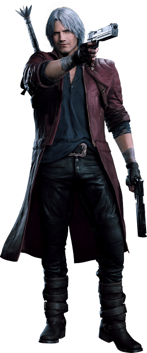
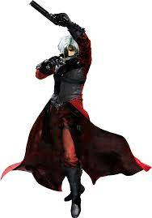
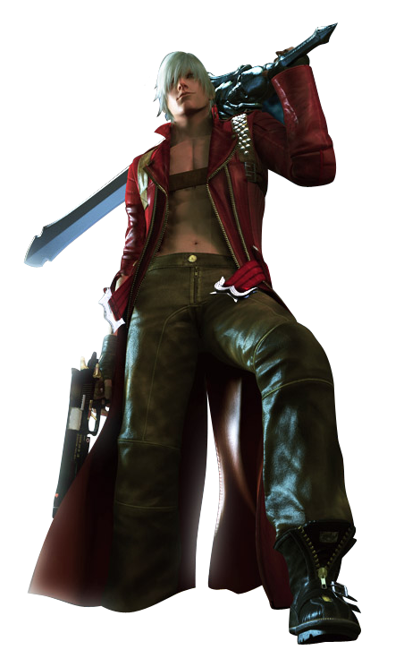
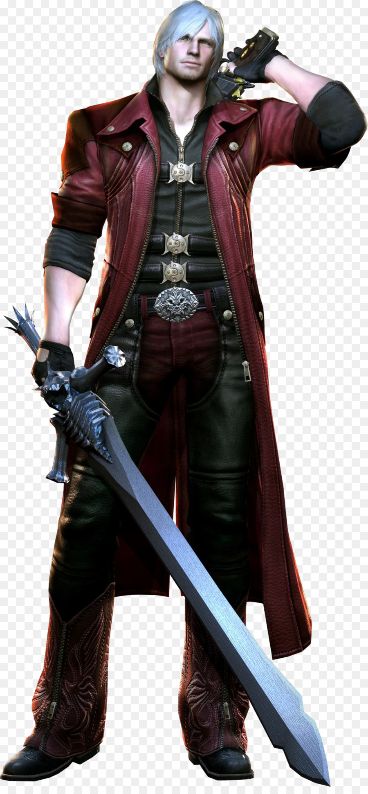
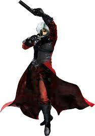
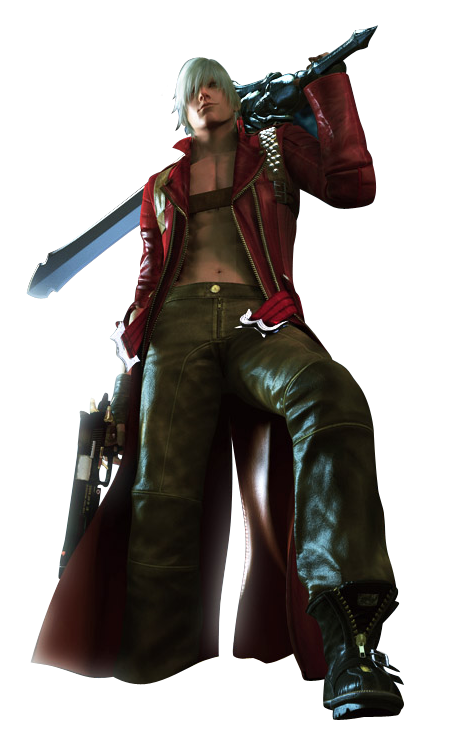
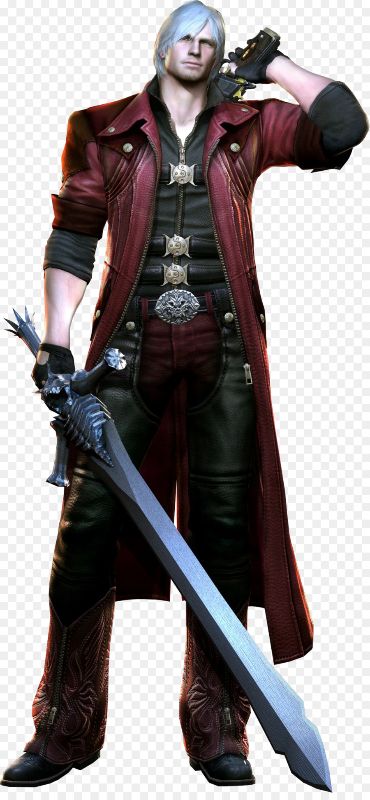
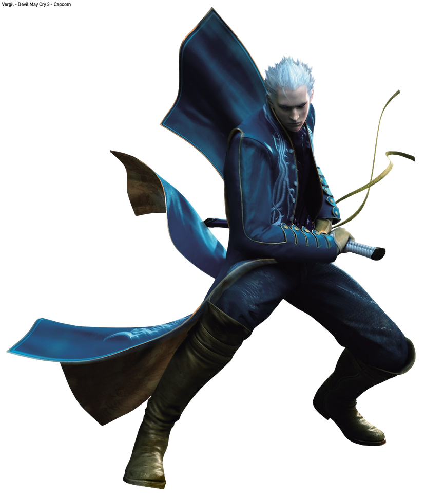

Dante
Dante is a character from the Devil May Cry series

He has appeared in all of the five games in his franchise
Dante is one of the main protagonists of the Devil May Cry franchise, and the main playable character for the majority of the games in the series. He is the second son of the demon Sparda and the human Eva, the younger twin brother of Vergil, and the uncle of Nero. Dante is a paranormal mercenary, private investigator and vigilante Devil Hunter dedicated to exterminating evil demons and other malevolent supernatural forces; a mission he follows in pursuit of those that killed his mother and corrupted his brother.
.jpg) 





Vergil

Vergil is the older twin brother of Dante and one of the main antagonists of the Devil May Cry franchise. Following the death of their mother as children, Vergil and Dante went their separate ways, with Vergil rejecting his humanity and embracing his demonic heritage, in contrast with his younger brother's embrace of humanity and initial rejection of the demonic. Stoic and reserved, Vergil displays a willingness to do anything in his quest to obtain the power of his father, Sparda.